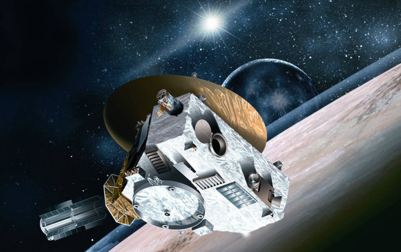
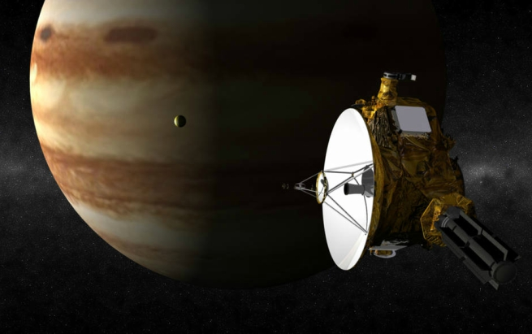

|  |
Flyby probes are just like the name sounds -- they fly by the planet. They do not enter the orbit of any planet.
|
|  |
Flyby spacecraft use their instruments to gather data and take pictures as they pass by a planet. Examples of flyby probes include Voyagers 1 and 2.
|